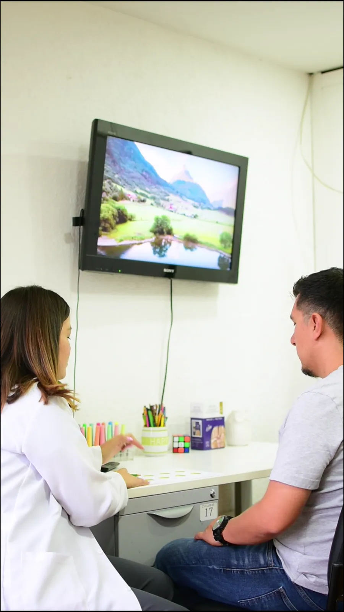
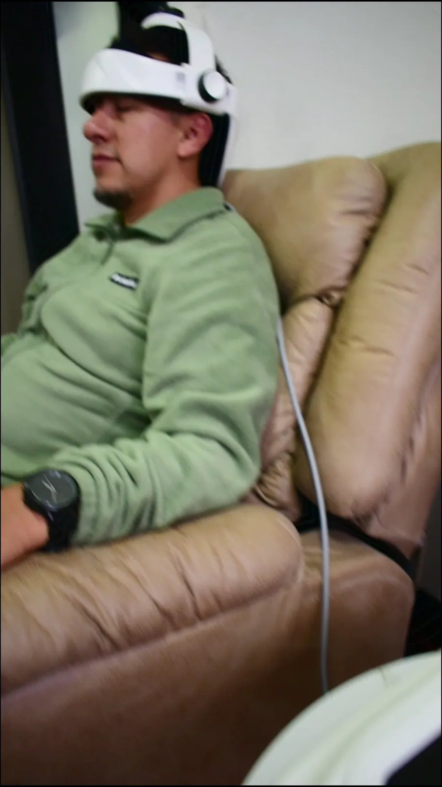

La mente también debe ser atendida
Psicología y neuropsicología para niños, adolescentes y adultos en Quito. Presencial y en línea.
Cuando la mente se dispersa, todo cuesta más.
La atención que se escapa. La ansiedad que no se va. Un hijo que aprende distinto y no sabes cómo ayudarlo.
Entender cómo funciona tu mente es el primer paso hacia la calma.
Evaluamos con pruebas científicas y acompañamos con cercanía, a tu ritmo.
Aquí tu mente está en buenas manos.
Verónica Báez, psicóloga y neuropsicóloga clínica.
Hola, soy Verónica Báez
Soy psicóloga y neuropsicóloga clínica. Ayudo a niños, adolescentes y adultos a entender cómo funciona su mente, y los acompaño con un plan claro hasta que el día a día se sienta más liviano.
- Humana
- Antes que un diagnóstico, eres una persona con una historia. Te escucho sin prisa y sin juicios.
- Cercana
- Te explico cada paso con palabras simples, y hablamos directo por WhatsApp.
- Especializada
- Trabajo con pruebas neuropsicológicas validadas y con técnicas como la Estimulación Magnética Transcraneal.
Tres formas de cuidar tu mente
Todo empieza por entender qué está pasando. A partir de ahí, armamos el camino contigo.
Evaluación neuropsicológica
Medimos atención, memoria, lenguaje y funciones ejecutivas con pruebas validadas. Recibes un informe claro y recomendaciones concretas.
Ver servicio
Rehabilitación neuropsicológica
Ejercicios y estrategias para fortalecer las funciones que más lo necesitan, en sesiones adaptadas a la edad y al ritmo de cada persona.
Ver servicio
Estimulación Magnética Transcraneal
Una técnica no invasiva que estimula zonas específicas del cerebro, en un proceso de 21 días junto a rehabilitación neuropsicológica.
Ver servicioLa EMT, explicada por Verónica
La Estimulación Magnética Transcraneal usa pulsos magnéticos suaves para estimular zonas concretas del cerebro. No requiere cirugía ni anestesia, y la persona permanece despierta y cómoda durante la sesión.
- Duración
- Un proceso de 21 días
- Para quién
- Niños, adolescentes y adultos, después de una evaluación
- Se indica en
- Ansiedad, depresión y algunas lesiones cerebrales
- Se acompaña de
- Rehabilitación neuropsicológica
Acompañamos cada etapa de la vida
Cada edad trae preguntas distintas. Adaptamos la evaluación y el acompañamiento a la persona que tenemos enfrente.
Niños
Cuando el aprendizaje, la atención o la conducta preocupan en casa o en la escuela.
Adolescentes
Cuando la ansiedad, el ánimo o la concentración empiezan a pesar en los estudios y en casa.
Adultos
Cuando la mente se siente cansada o dispersa, o después de una lesión cerebral.
Nuestras especialidades
Toca cada una para conocerla.
Neurodivergencias
Formas distintas de pensar, aprender y sentir. Las entendemos y las acompañamos sin intentar cambiar quién eres.
Leer más sobre neurodivergenciasAutismo
Evaluación y acompañamiento del espectro autista en niños, adolescentes y adultos, con apoyo cercano a la familia.
Leer más sobre autismoTDAH
Diagnóstico cuidadoso del trastorno por déficit de atención e hiperactividad, y estrategias para casa, escuela y trabajo.
Leer más sobre TDAHAltas capacidades
Identificamos a niños y adultos con un coeficiente intelectual de 130 o más, y cuidamos también su mundo emocional.
Leer más sobre altas capacidadesAnsiedad y depresión
Acompañamiento para recuperar la calma y el ánimo, con técnicas basadas en evidencia y, cuando corresponde, EMT.
Leer más sobre ansiedad y depresiónUn recorrido por tu mente
La neuropsicología estudia cómo el cerebro hace posible lo que piensas, sientes y haces. Baja con calma: cada zona se ilumina con lo que hace.
-
El director de orquesta
Lóbulo frontal
Planifica, organiza, toma decisiones y frena los impulsos. Aquí viven las funciones ejecutivas y gran parte de la atención.
Cuando cuesta: Desorganización, impulsividad y distracción. Es una zona clave en el TDAH.
Cómo lo evaluamos -
Donde actúa la EMT
Corteza prefrontal dorsolateral
Una parte del lóbulo frontal que ayuda a regular el ánimo, la atención y la memoria de trabajo.
Por qué importa: En la depresión es una de las zonas que más se estimula con la Estimulación Magnética Transcraneal.
Conoce la EMT -
Memoria y lenguaje
Lóbulo temporal
Comprende lo que escuchamos, guarda los recuerdos nuevos y ayuda a encontrar las palabras.
Cuando cuesta: Olvidos frecuentes o dificultad para comprender y para expresarse.
Cómo lo evaluamos -
El mapa del cuerpo y del espacio
Lóbulo parietal
Une lo que sentimos con el lugar donde estamos. También participa en el cálculo y en la lectura.
Cuando cuesta: Dificultades con los números, la escritura o la orientación en el espacio.
Cómo lo trabajamos -
Las emociones
Sistema límbico
En lo profundo del cerebro, la amígdala y el hipocampo nos ayudan a sentir, a recordar y a reaccionar ante lo que vivimos.
Cuando cuesta: Participa en la ansiedad y en los cambios del estado de ánimo.
Ansiedad y depresión -
Coordinación y aprendizaje
Cerebelo
Coordina los movimientos y el equilibrio, y también participa en la atención y en el aprendizaje de habilidades nuevas.
Cuando cuesta: Torpeza al moverse o dificultad para aprender rutinas nuevas.
Cómo lo trabajamos
Mapa simplificado. En la realidad, cada función surge de redes que conectan muchas zonas a la vez.
Agendar es simple
Todo se coordina por WhatsApp, sin formularios ni esperas largas.
Escríbenos
Cuéntanos en pocas palabras qué te preocupa o qué necesitas.
Te orientamos
Te decimos qué servicio encaja contigo y coordinamos el día y la hora.
Tu primera cita
En el consultorio en Quito o en línea, desde donde estés.
- PresencialEn nuestro consultorio en Quito
- En líneaPor videollamada, desde donde estés
Entender también es cuidarse
Artículos claros sobre neurodesarrollo y salud emocional, para familias y adultos que buscan respuestas.
Navegamos en buena compañía
Instituciones y proyectos con los que trabajamos de cerca.
- Magico Mundo

- LogroServis

- Radio Bienestar

- NubeNube